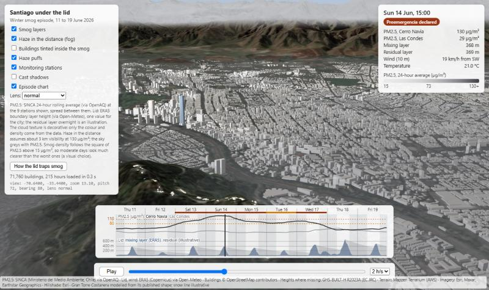
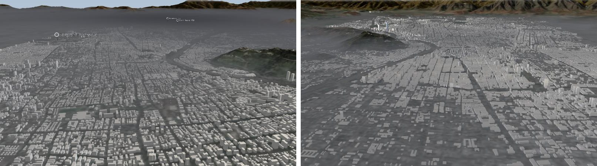
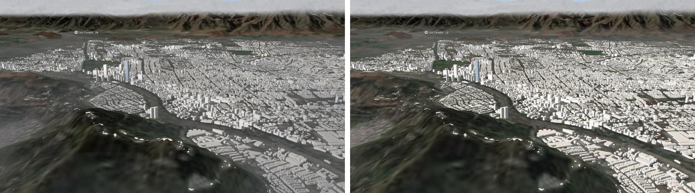

The question
Santiago is known for its winter smog. The city sits in a basin between the Coastal Range and the Andes, and on calm winter days its smoke has nowhere to go. Most pictures of an episode are a single photo of a grey skyline, or a line chart of PM2.5. Neither shows why the smog stays: the lid of cold air over the city, how low it sinks at night, and how little it rises in the afternoon.
The aim was to put the measurements back into the place they describe: the real ground of the basin, the city's buildings at their real heights, and the smog drawn from station readings and the lid height for every hour of one episode, from 11 to 19 June 2026. Preemergencia was declared on 13, 14, 15 and 17 June, and alerta on 16 June.
The data
| What | Source | Used for |
|---|---|---|
| PM2.5, 24-hour rolling average, at 9 monitoring stations | SINCA, Ministerio del Medio Ambiente, through the OpenAQ archive | How much smog, and where |
| Boundary layer height, wind at 10 m, temperature at 2 m | ERA5 reanalysis (ECMWF, Copernicus), through Open-Meteo | The height of the lid, and the weather in the info box |
| Building outlines and mapped heights | OpenStreetMap, Chile extract from Geofabrik | 71,773 buildings in a 16 by 9 km box around the centre |
| Average building height on a 100 m grid (2018) | GHS-BUILT-H R2023A, European Commission JRC | Heights where OpenStreetMap has none |
| Elevation tiles | Mapzen Terrarium, on AWS open data | The terrain, the ground under each building, the station heights |
| Satellite imagery and hillshade | Esri World Imagery and World Hillshade | The colour of the ground |
| Declared episodes | News reports (La Tercera, Emol, BioBioChile, T13) | Alerta and preemergencia days |
SINCA's own website refuses visitors from Korea, so the PM2.5 values come from SINCA's data as archived by OpenAQ. Nine of the fifteen Santiago stations tried had June 2026 readings: Talagante, Pudahuel, Cerro Navia, Quilicura, El Bosque, Parque O'Higgins, Puente Alto, La Florida and Las Condes.
One page, four notebooks
The page is a single 3D view. The reader moves the camera freely (nothing turns on its own), plays the episode at 1 to 8 hours a second, or drags along the time bar or the chart to any of its 215 hours. An info box gives the declared level, PM2.5 in the west and the east of the city, both layer heights, the wind and the temperature. Checkboxes turn each part of the smog on and off, and a short explainer shows how the lid traps smog.

| Notebook | What it does |
|---|---|
| 00buildings | Reads the 352 MB Chile extract of OpenStreetMap and keeps the buildings in the box around central Santiago. |
| 01webbuildings | Gives every building a height and a ground level, simplifies the outlines and writes them for the web (11.8 MB). |
| 02smogdata | Downloads PM2.5 for the stations and ERA5 for nine points across the basin, and checks both with charts. |
| 03websmog | Cleans the PM2.5 series, builds the city lid and the residual layer, and writes the 23 kB episode file. |
The page runs on deck.gl: its TerrainLayer draws the basin from elevation tiles, and the buildings, smog, stations and labels are drawn on top.
What the page shows
A week under the lid
The episode builds slowly. On 11 and 12 June PM2.5 at Cerro Navia sits around 45 to 55 µg/m³. On the afternoon of 12 June the lid rises to only about 140 m, and over the next two days the 24-hour average climbs past the alerta level of 80 and the preemergencia level of 110, peaking on 14 June. It eases from 15 to 17 June without ever falling far, and drops below 60 on 18 June, when the lid finally rises to about 685 m.
![Two stacked charts from 11 to 19 June 2026. Top: PM2.5 24-hour averages at nine stations; Cerro Navia (dark line) rises from about 45 to 132 on 14 June, above the dashed preemergencia line at 110, and falls to about 40 on 18 June; Las Condes (grey line) stays between 21 and 33 until 17 June. A band along the top marks preemergencia declared on 13, 14, 15 and 17 June and alerta on 16 June. Bottom: the lid height; the ERA5 mixing layer rises to between 140 and 460 m in the afternoons and falls to almost nothing every night, then reaches 685 m on 18 June](images/cs_episode.png)
How the lid traps smog
On clear winter nights the ground cools quickly and the air touching it becomes colder than the air above. This temperature inversion works like a lid: cold, heavy air near the ground cannot rise through the warmer air on top, so smoke from traffic, industry and wood stoves stays in a shallow layer. In the afternoon the sun warms the ground and the layer deepens, diluting the smog, but in this episode it reached only 140 to 460 m. Smog lifted during the day stays aloft overnight in a residual layer above the new lid; the page draws both layers.
West against east
The smog is not spread evenly. The highest values were in the west of the city, at Pudahuel and Cerro Navia, about 500 m above sea level. Las Condes, about 800 m up on the slope towards the Andes, stayed between 21 and 33 µg/m³ until 17 June. On the page, the smog between stations is spread from their readings, so looking west from the centre the city fades into grey, while looking east the towers of Las Condes and the mountains stay in view.

The same view, two days apart
At 15:00 on 18 June the mixing layer was 530 m deep and still rising, and PM2.5 at Cerro Navia had fallen to 40 µg/m³. From the start view, the haze that covered the city and the foot of the Andes four days earlier is gone, and the satellite colours of the ground come back.

How the smog is drawn
Only two numbers drive the smog each hour: the PM2.5 field and the lid. The field is spread from the nine stations by inverse distance weighting and fades out between 9 and 20 km from the nearest station. The smog itself is drawn in four ways, each of which can be turned off:
- Smog layers: 14 thin sheets stacked from the basin floor to the top of the residual layer, closer together near the ground, more opaque inside the mixing layer than above it. Their grey follows PM2.5, from pale at 15 µg/m³ to dark soot at 130. A slowly drifting cloud texture keeps them from looking like flat glass; it is decorative.
- Haze in the distance: every pixel of the ground and the buildings is greyed by the length of its line of sight that runs through the smog, assuming about 3 km visibility at 130 µg/m³.
- Haze puffs: 3,000 soft puffs drifting among the buildings.
- The sky greys towards the horizon as PM2.5 rises, and the smog dims at dusk and at night.
Smog density follows the square of PM2.5 above 15 µg/m³, not a straight line. This is a visual choice (see Problems). The stations stand as pins at their true ground heights, each with a dot in the smog grey of its reading. The ground is satellite imagery shaded by a hillshade, with snow added above 1,500 m; the snow line is illustrative.
Problems in the data, and how they were handled
- No hourly PM2.5. The OpenAQ archive holds SINCA's 24-hour rolling average, not hourly readings. The page shows it as it is (it is also the measure used to declare episodes) and does not back-calculate hourly values; the rhythm within each day comes from the lid.
- A jump that reverses. El Bosque jumps by 18 µg/m³ at 01:00 on 12 June and drops back at 10:00, the mark of one bad hourly reading inside the 24-hour average. Such jumps (10 or more, reversed within a day) are subtracted from the hours in between; gaps of up to three hours are interpolated.
- A lid that is not the inversion. At night, ERA5's boundary layer height is the depth of air that still mixes, not the inversion top, so the day's smog stays above it. The page adds a residual layer that holds the afternoon height and sinks 3% an hour, labelled as an illustration.
- Most buildings have no height. Only 21% of the buildings have a mapped height in OpenStreetMap; a rule by building type gives 38%, the GHS-BUILT-H grid 41%, a fallback ten buildings. The 300 m Gran Torre Costanera is mapped as fourteen full-height pieces, so the page models it from its published shape.
- Buildings floating or sunk into the hills. deck.gl's terrain extension did not set the buildings on the ground on the test computer, so each building's ground level comes from the elevation tiles (lowest corner, minus 2 m).
- A clean day that looked smoggy. With density in a straight line from PM2.5, 18 June (40 µg/m³, deep lid) looked greyer than 14 June (130 µg/m³), as the deep lid carried thin smog over the hills. Density now follows the square of PM2.5: 5% of full strength at 40, not 22%.
Limits
The page shows measurements in a modelled scene; it is not an air quality model. PM2.5 is a 24-hour average at nine points, spread between them by distance, so it misses hourly peaks and local hot spots. The lid is one ERA5 value for the whole city (two grid cells cover Santiago). The residual layer, cloud texture, puffs, drift and snow are illustrations; the smog does not move with the wind. How dark it looks rests on a visibility rule of thumb and the squared density. 79% of the building heights are estimated.
Where this could be useful
- Teaching: inversions are hard to picture from a profile chart; watching the lid sink over a real city makes them concrete.
- Public communication: an episode in the reader's own city, hour by hour, beside the official measure and level.
- Other basin cities: the same open-data pipeline could show smog in Kathmandu, Mexico City or other cities ringed by mountains.
About
Lik Ren Tai applies data science in two fields: environmental science and railway systems. This project was built with Python (pyosmium, GeoPandas, pandas, rasterio, matplotlib) and deck.gl, with its TerrainLayer for the 3D ground.
PM2.5: SINCA, Ministerio del Medio Ambiente de Chile, via the OpenAQ archive. Weather and boundary layer height: ERA5 (Copernicus Climate Change Service, ECMWF) via Open-Meteo (CC BY 4.0). Buildings: © OpenStreetMap contributors (ODbL). Building heights: GHS-BUILT-H R2023A, European Commission JRC. Elevation: Mapzen Terrarium tiles on AWS open data. Imagery and hillshade: Esri, Maxar, Earthstar Geographics. Episode declarations: La Tercera, Emol, BioBioChile and T13. This is an independent project, not affiliated with or endorsed by any of the sources.